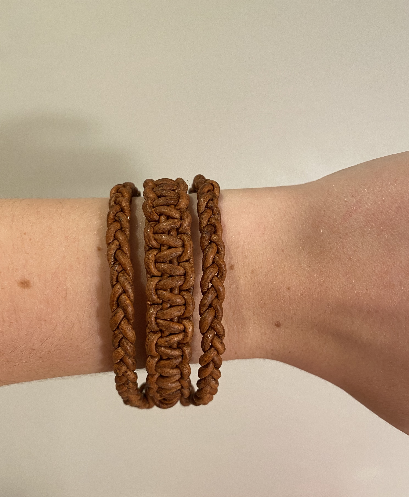

Craftsmanship: Athena's beautiful weaving represents her craftsmanship, and inspires people around the world. This bracelet is made out of a light brown leather cord. The color brown is connected to trees, wood, and the earth as a whole. This bracelet will give you the ability to create anything from your imagination.
